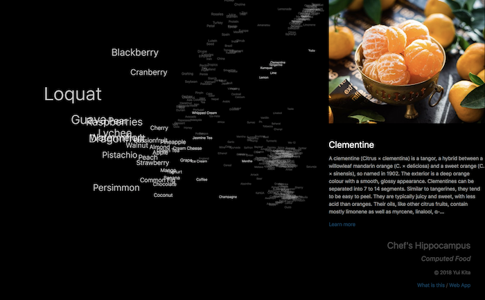

Yui Kita
Ph.D Candidate @ The University of Tokyo, Computer Science (SV: Prof. Jun Rekimoto)
Sony Computer Science Laboratories (Sept 2015 - Mar 2016)
Takram (Apr 2014 - Mar 2015)
IPA Mitoh Project (Aug 2012 - Feb 2013)
Igarashi Design UI Project (Jun 2010 - Mar 2013)
I'm a researcher and a designer with a background of Computer Science and Augmented Reality. My research focuses on Human Computer Interaction, Human Augmentation, and my interests include introducing new methods for enhancement of human creativity with computational support. I enjoy swimming, cooking and competitive programming as hobby.
C.V. /
Contact


Computed Food is an interactive food gallery where you can interact with the food space used in Chef's Hippocampus. Foods are mapped in three-dimensional space created by word embedding. The distance in three dimensional space is proportional to the affinity of foods. If you closely explore, you should find that the location of foods is decided by the type of food. Using this distance, the algorithm suggests you a combination of “good and new“ foods. You can explore the space by dragging and scrolling.
> Web App

Chef's Hippocampus is a project to generate "good and new" collections of ingredient from existing recipe. "Creativity" is a common word, but not commonly defined. We have a big discussion. However, many artisits and researchers agree that something is "creative" when it is "good and new". The system generates "good and new" collection of food based on this hypotesis. This system values creavity by average and standard deviation of distance between ingredients. The basic idea of Chef's Hippocampus is applicable to various collections such as colors, clothes and items, interiors, where human enumeration capability falls short of the possible combination.
> Movie (VICE.com)
> Movie (YouTube)

RESAS Prototype The Japanese economy today faces severe structural issues caused by population decline along with other social factors. RESAS is a system designed to analyze and display big data related to the country’s local economy that was presented by Japan’s Ministry of Economy, Trade and Industry. This is the first project in which the Japanese government formally employed the prototyping process in developing a software system. As an intern of Takram, I worked in a team of 5 people, took part in its population dynamics visualization design / software development.
> Movie (Takram.com)
> Red Dot Award (2016)
> Good Design Gold Award (2015)

Programmable Food
is a concept that makes food programmable to realize richer experiences
of fine dinning. As the first step, MIDAS FORK enables chefs to program transition of tastes
such as bitter to sweet or sweet to bitter. The system consists of a programming interface
and computationally enhanced cutlery. Chefs can program the transition of tastes in advance,
and the cutlery seasons foods by shooting seasonings using sensing and pumping mechanism.
> Y.Kita and J.Rekimoto. Digitally Enhanced Utensils: Designing Time-sensitive Gustations.16th International Conference on Human-Computer Interaction 2014
> Granted by IPA MITO

DEEP LOOK: Dynamic Focus Interactions
is a system that adds a dynamic focus interaction on a picture to provide a depth perception of
the image. The system makes layers of viewer's gaze point to be in the focus, others out of
the focus using a gaze tracker and image processing algorithm. Through this system, a Monet's
painting turns from a static image into dynamic 3D image, or an complex subway map emphasizes
the focusing lines as if they are floating on the other lines. The system is applicable for a
novel art gallery, education or general guidance.
> Appeared at iii Exhibition, The University of Tokyo, August 2012